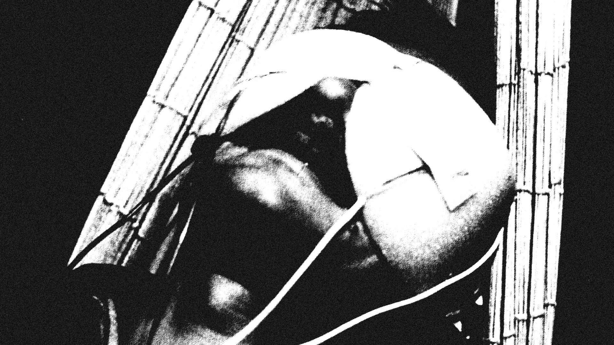
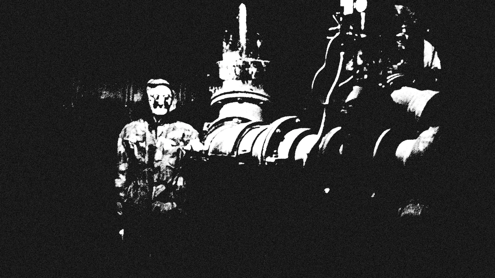
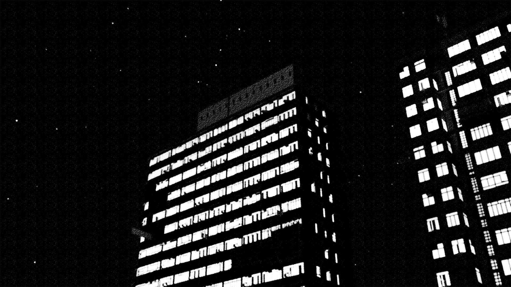
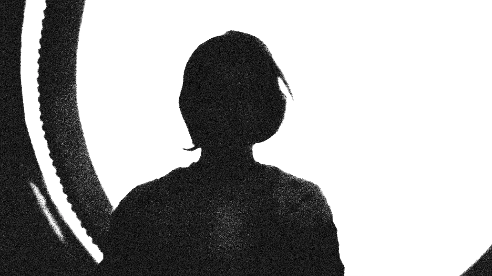
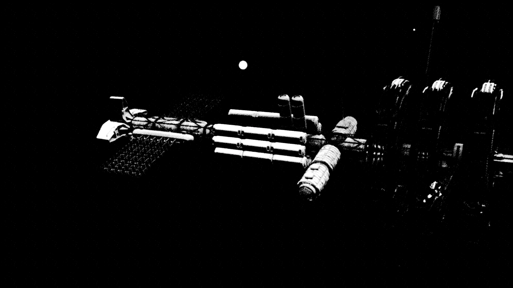
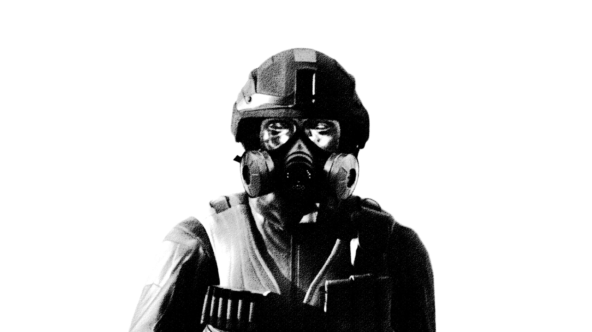
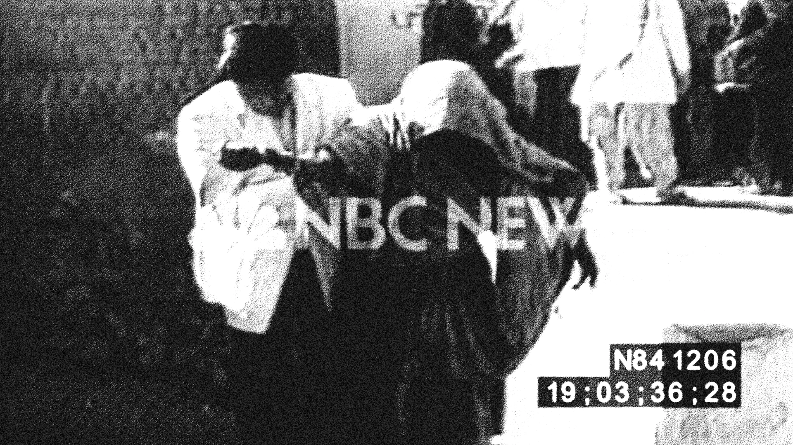
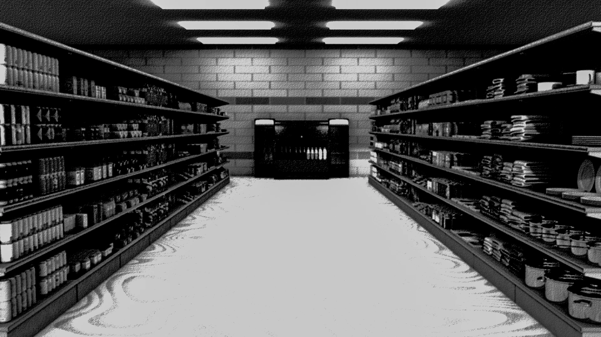

Control：睡眠与控制的实验影像
Control 是一部围绕睡眠与控制展开的实验影像，源于我自身的睡眠困扰，以及对 Jonathan Crary《24/7》的阅读。我从书中涉及的消费、军事、科技与生产等案例出发收集资料，探讨人的睡眠与日常时间如何受到外部系统的影响，并尝试将这一议题转化为影像叙事。制作中，我通过黑白、低细节与高噪点处理统一不同来源的画面，尝试用三维动画补充缺少对应素材的段落，并将书中的部分文字转为机械化朗读，处理成类似广播的声音，以声音和画面的关系表达控制这一主题。结合初稿反馈，我删减部分内容并调整画面变化，最终完成一部结合资料影像、声音与剪辑节奏的作品，邀请观众思考睡眠、自主时间与社会控制之间的关系。







